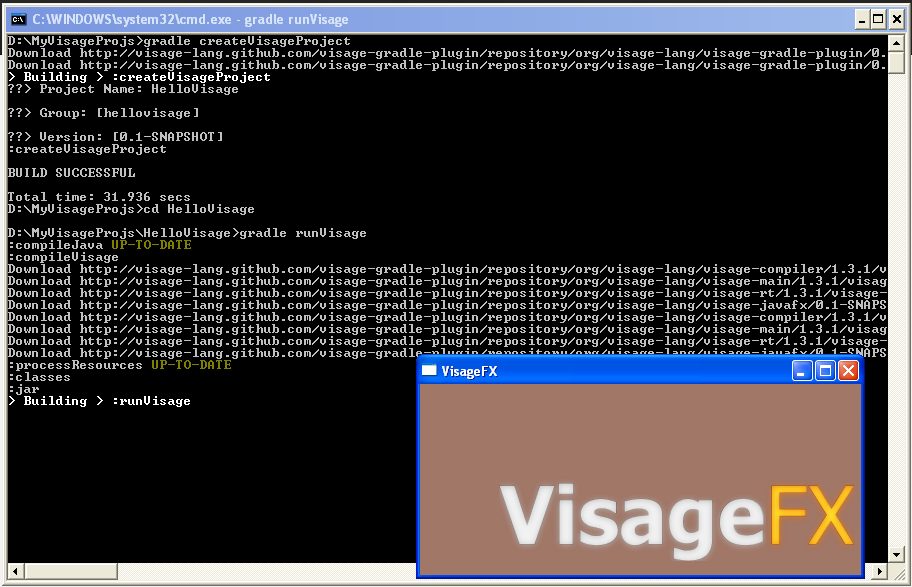

Welcome to the Gradle Visage Project.
This project is to build a Gradle plug-in for Visage Language. This plug-in provides a easy way to develop Visage project. All you need is latest version of JDK and Gradle build tool.
What is Visage?
Visage is a domain specific language (DSL) designed for the express purpose of writing user interfaces.
What is Gradle?
Gradle is a general purpose Java build tool. Built on Groovy language but its also used for Java projects. You write build using Domain-Specific Language (DSL).
Prerequisite
- JDK 7
- Gradle
Plugins
apply plugin: 'visage' // Use this for generic visage application. apply plugin: 'visage-template' // This will help you to create a visage project apply plugin: 'visage-javafx' // Uset to develope Visage + JavaFX application
Plugin in action
Dependency Detail
Currently this plug-in is hosted in the project Github site. Once the Visage project gets shape this will be moved to Maven Central Repo.
Repository URL http://visage-lang.github.com/visage-gradle-plugin/repository/
| Group ID | Artifact ID | Version | Remarks |
|---|---|---|---|
| org.visage-lang | visage-gradle-plugin | 0.5 | Contains visage-template and other plugins. |
| org.visage-lang | visage-compiler | 1.3.1 | Compiler |
| org.visage-lang | visage-main | 1.3.1 | |
| org.visage-lang | visage-rt | 1.3.1 | Runtime |
| org.visage-lang | visage-javafx | 0.1-Snapshot | Visage binders for JavaFX 2. |
Getting Started....
Once you have all the prerequisite in your system, open a terminal go to your favorite folder create a new build.gradle file and copy paste the below code snippet and save.
buildscript {
repositories {
mavenLocal();
repositories {
mavenRepo url: "http://visage-lang.github.com/visage-gradle-plugin/repository/"
}
}
dependencies {
classpath 'visage:visage-gradle-plugin:0.5'
}
}
apply plugin: 'visage-template'
Execute following command in your terminal in same folder of the build.gradle
gradle createVisageProject
This will ask you three question of Project name, group name and version name.
Once you enter you will get a folder in the name of your project name. You are ready to run your first visage project.
Change directory to the new folder and execute the following command.
gradle runVisage
Mow you must see a simple visage javafx app runs on your system!
Enjoy!
Mailing lists
The users mailing list is here and the developers mailing list is here.
Authors and Contributors
The following people have contributed to this project.
- Rajmahendra Hegde (@rajonjava)
- open for contribution